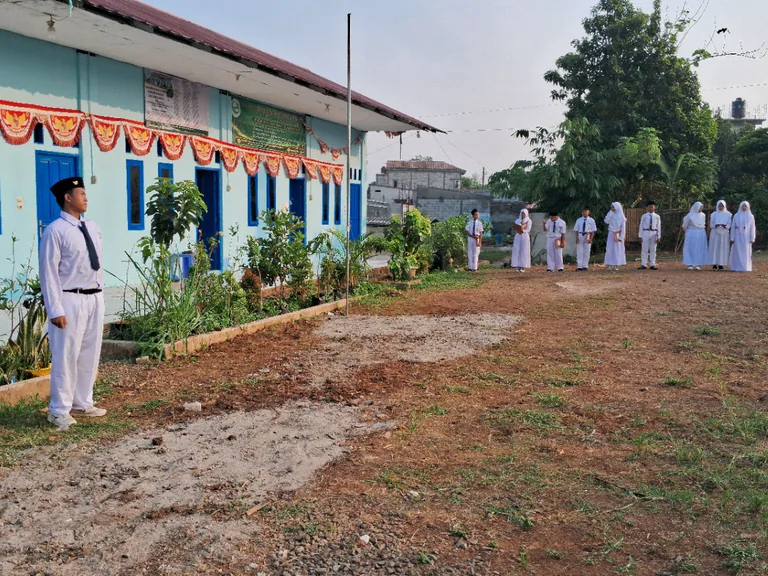

Visi
Menjadi sekolah unggulan dalam mencetak generasi penghafal Al-Qur’an yang cerdas dan berwawasan teknologi.
Profil Institusi
Mengenal lebih dekat SMP Tahfizh Quran Fantastis sebagai sekolah menengah berbasis pondok pesantren.
Sekolah & Pesantren
SMP Tahfizh Quran Fantastis adalah lembaga pendidikan yang berfokus pada pembentukan generasi Qurani yang berakhlak mulia dan siap menghadapi perkembangan teknologi di era modern.
SMP Tahfizh Quran Fantastis adalah sekolah menengah berbasis pondok pesantren yang tumbuh untuk membantu siswa belajar, menghafal Al-Qur'an, dan berkembang sebagai pribadi yang berilmu, beradab, dan siap menghadapi masa depan.
Sebagai bagian dari Pondok Pesantren Daarul Quran Fantastis Pusat, sekolah ini menghadirkan suasana belajar yang dekat, terarah, dan membina.

Arah Pendidikan
Menjadi sekolah unggulan dalam mencetak generasi penghafal Al-Qur’an yang cerdas dan berwawasan teknologi.
Komitmen Pendidikan
“Kami berkomitmen untuk mendidik siswa tidak hanya cerdas secara akademik, tetapi juga memiliki akhlak yang baik dan siap menghadapi tantangan masa depan.”
Temukan arah pendidikan sekolah atau hubungi kami untuk informasi yang lebih khusus.